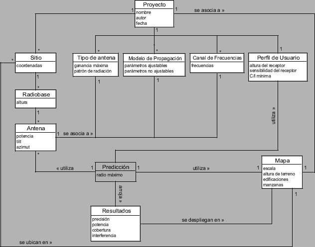

Siguiente: Arquitectura de paquetes
Subir: Desarrollo de Software
Anterior: Análisis del error de
Índice General
Un paso esencial de un análisis orientado a objetos es la
descomposición del problema en conceptos individuales, pues es la
base para el diseño de las clases de software. Una representación de
los conceptos más importantes que describen el dominio del problema
puede verse en el diagrama UML8.1 de la figura 8.1.
Figura 8.1:
Modelo conceptual
|

|
Subsecciones
SAPO